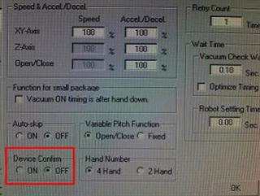
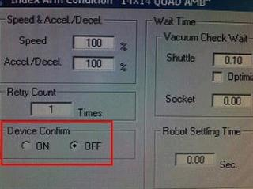
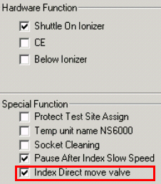
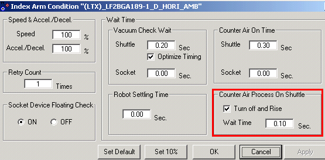

Service History
Subject: NS-8000 HMI 2.6 "Device Confirm" function
Handler Model: NS-8000 series
Controller: RC520
Date: 4 Feb 2010
Symptom
In HMI ver. 2.6 there is an additional function of "Device confirm" found in unitset/ input arm, index arm and output arm condition.
|
 |
 |
Action
1) Any update for my enquires on "device confirm"?
Will there be any added advantage if the function is turn on?
Please state example or situation whereby we need to turn on this function.
Device confirm function is checking the vacuum condition after placed the device and finished counter air on time.
However if customer enable this function, UPH may slightly down.
According to device surface condition.
Especially it is high viscosity condition.
(Because it is easy to stick between device and pad.)
So, usually there is not necessary to select by customer.
2) Additional item "Index Direct move valve" found in HMI v.2.6 Handler Config
It has been using new vacuum unit since 2008 shipment.
This is improved vacuum and counter air response time.
Please take note function [Turn off and rise] in HMI [Unitset]- [ Index Arm Condition] will only appear if "Index Direct move valve" in Handler Config is enable.
The stability transportation mode is added, for a small device.
If "Index Direct move valve" is enabled during HMI installation,
the Unitset for Index Arm will add [Turn off and rise], (after place device on the output shuttle, ) wait for the duration time after vacuum is cut off before index arm move above output shuttle.
|
 |
 |